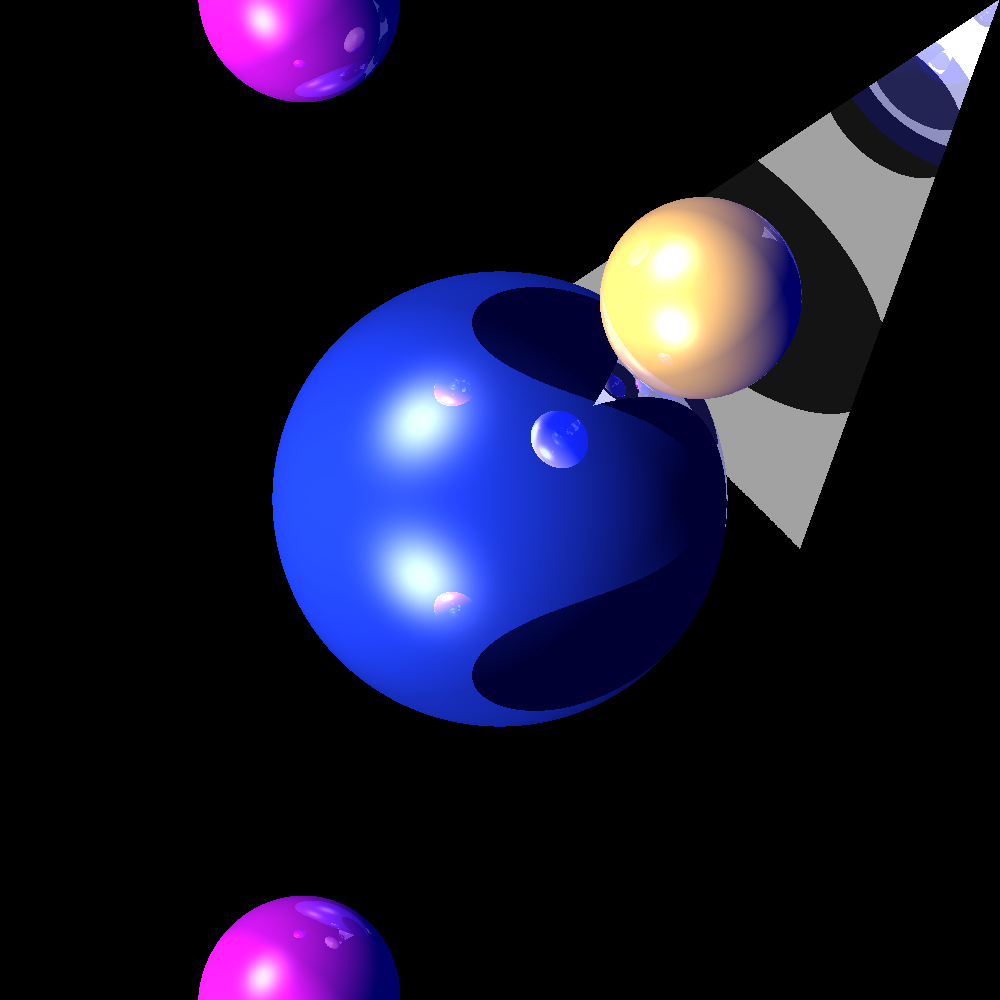
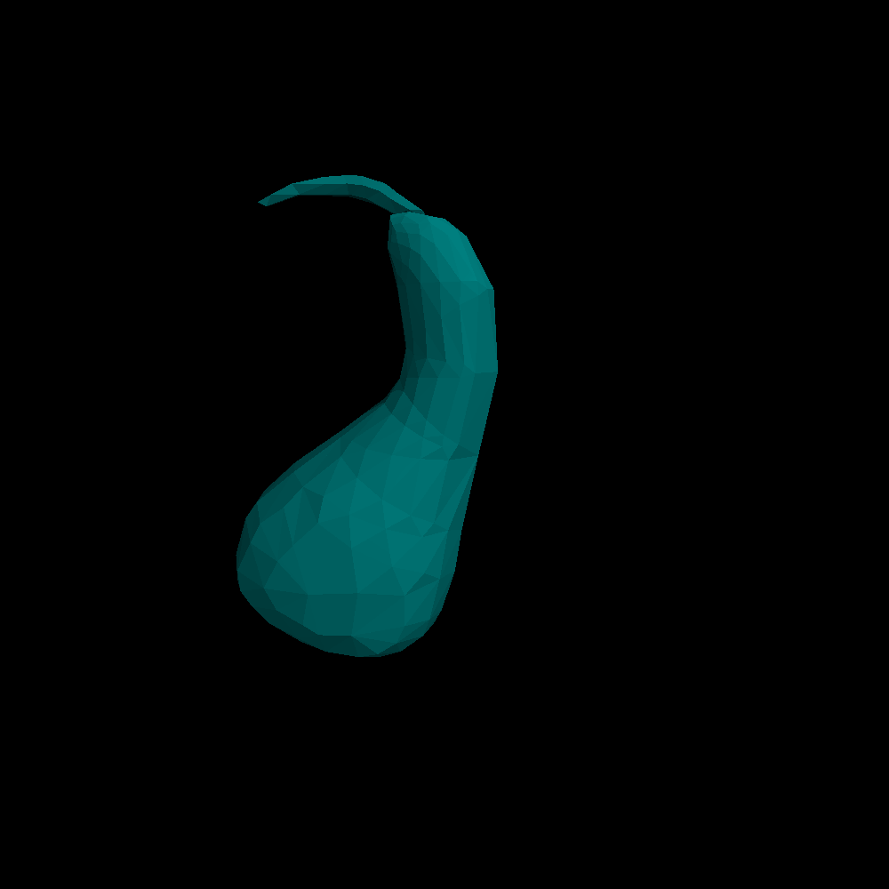

Assignment 2
Image(s):
Basic ray tracing on a sphere
Input
Multi sphere ray tracing, overlapping spheres
Input
Multi spheres, shadowing

Input
Multi spheres, shadowing with reflections

Input
Multi spheres with triangles, shadowing with reflections
Input
More spheres with triangles, shadowing with reflections

Input
Ellipsoid via sphere transform, scale, rotate, translate
Input
Multi ellipsoid via sphere transform, scale, rotate, translate
Input
Triangle shear transform, rotate, scale, anti rotate
Input
Mega scene, multi geometries and transforms, reflect depth 2
Input
Mega scene, multi geometries and transforms, reflect depth 5
Input
Mega scene, multi geometries and transforms, reflect depth 10
Input
Gourd

Input
Source
Back